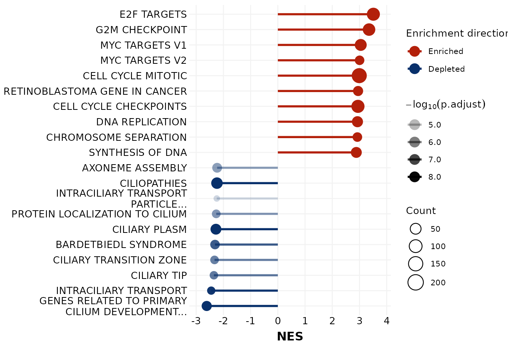

The lollipopPlot function generates a lollipop-style
visualization of Gene Set Enrichment Analysis (GSEA) results. Each
horizontal line represents a pathway, and the dot at its end marks the
enrichment statistic (e.g., NES or GeneRatio). Dot size and transparency
encode statistical significance, while color indicates enrichment
direction. The connecting line segments can be toggled on or off.
Usage
lollipopPlot(
seDataFgsea,
showCategory = 10,
breaklineN = 30,
x = "NES",
alpha = "p.adjust",
size = "Count",
fontSize = 10,
addSeg = TRUE,
lineSize = 1,
lineType = "solid"
)Arguments
- seDataFgsea
A
SummarizedExperimentobject containing GSEA results in its metadata.- showCategory
Numeric or character. Number of top pathways to display or specific pathway names to include. When numeric:
If
x = "NES": Displays top N positively enriched and top N negatively enriched pathways (up to 2N total pathways)If
xis"Count"or"GeneRatio": Displays top N pathways sorted by the specified metric
When character: Displays only the specified pathway IDs/names. Default is
10.- breaklineN
Integer. Maximum number of characters before wrapping pathway names. Default is
30.- x
Character. Variable for the x-axis. Must be one of
"NES","Count", or"GeneRatio". Default is"NES".- alpha
Character. Variable for transparency encoding. Must be one of
"pvalue","p.adjust", or"qvalue". Default is"p.adjust".- size
Character. Variable for dot size. Must be one of
"Count"or"GeneRatio". Default is"Count".- fontSize
Numeric. Base font size for plot text elements. Default is
10.- addSeg
Logical. Whether to include connecting line segments between the y-axis and dots (the "stick" of the lollipop). When
FALSE, only dots are displayed. Default isTRUE.- lineSize
Numeric. Line thickness for the connecting segments when
addSeg = TRUE. Default is1.- lineType
Character. Line type for the connecting segments when
addSeg = TRUE. Options include"solid","dashed","dotted", etc. Default is"solid".
Value
A named list containing two components:
lollipopPlotA
ggplot2object of the lollipop plot with pathways on the y-axis and enrichment metrics on the x-axis.tableLollipopPlotA
data.framecontaining the plotted data with columns:original_name: Original pathway IDsDescription: Formatted pathway names with line breaksX-axis variable: The column specified by the
xparameter (NES,Count, orGeneRatio)Significance column: The column specified by the
alphaparameter (pvalue,p.adjust, orqvalue)neg_log_alpha: Transformed significance value (-log10(alpha))Size variable: The column specified by the
sizeparameter (CountorGeneRatio)
Details
This function creates a lollipop chart where each pathway is represented
by a horizontal line segment (the "stick", controlled by addSeg)
ending in a dot (the "pop"). The visual encoding follows these rules:
X-axis position: Enrichment metric (NES, Count, or GeneRatio)
Dot size: Gene count or gene ratio
Dot/line color: Enrichment direction (red for enriched, blue for depleted when x = "NES"; red only for other metrics)
Transparency (alpha): Statistical significance (-log10 transformed)
Line segments: Optional connecting lines from y-axis to dots, controlled by
addSeg
Examples
data("sig2Fun_result")
lollipopPlot(seDataFgsea = sig2Fun_result)
#> $lollipopPlot

#>
#> $tableLollipopPlot
#> original_name
#> WP_GENES_RELATED_TO_PRIMARY_CILIUM_DEVELOPMENT_BASED_ON_CRISPR WP_GENES_RELATED_TO_PRIMARY_CILIUM_DEVELOPMENT_BASED_ON_CRISPR
#> GOBP_INTRACILIARY_TRANSPORT GOBP_INTRACILIARY_TRANSPORT
#> GOCC_CILIARY_TIP GOCC_CILIARY_TIP
#> GOCC_CILIARY_TRANSITION_ZONE GOCC_CILIARY_TRANSITION_ZONE
#> WP_BARDETBIEDL_SYNDROME WP_BARDETBIEDL_SYNDROME
#> GOCC_CILIARY_PLASM GOCC_CILIARY_PLASM
#> GOBP_PROTEIN_LOCALIZATION_TO_CILIUM GOBP_PROTEIN_LOCALIZATION_TO_CILIUM
#> GOCC_INTRACILIARY_TRANSPORT_PARTICLE GOCC_INTRACILIARY_TRANSPORT_PARTICLE
#> WP_CILIOPATHIES WP_CILIOPATHIES
#> GOBP_AXONEME_ASSEMBLY GOBP_AXONEME_ASSEMBLY
#> REACTOME_SYNTHESIS_OF_DNA REACTOME_SYNTHESIS_OF_DNA
#> GOBP_CHROMOSOME_SEPARATION GOBP_CHROMOSOME_SEPARATION
#> REACTOME_DNA_REPLICATION REACTOME_DNA_REPLICATION
#> REACTOME_CELL_CYCLE_CHECKPOINTS REACTOME_CELL_CYCLE_CHECKPOINTS
#> WP_RETINOBLASTOMA_GENE_IN_CANCER WP_RETINOBLASTOMA_GENE_IN_CANCER
#> REACTOME_CELL_CYCLE_MITOTIC REACTOME_CELL_CYCLE_MITOTIC
#> HALLMARK_MYC_TARGETS_V2 HALLMARK_MYC_TARGETS_V2
#> HALLMARK_MYC_TARGETS_V1 HALLMARK_MYC_TARGETS_V1
#> HALLMARK_G2M_CHECKPOINT HALLMARK_G2M_CHECKPOINT
#> HALLMARK_E2F_TARGETS HALLMARK_E2F_TARGETS
#> Description
#> WP_GENES_RELATED_TO_PRIMARY_CILIUM_DEVELOPMENT_BASED_ON_CRISPR GENES RELATED TO PRIMARY\nCILIUM DEVELOPMENT BASED ON\nCRISPR...
#> GOBP_INTRACILIARY_TRANSPORT INTRACILIARY TRANSPORT
#> GOCC_CILIARY_TIP CILIARY TIP
#> GOCC_CILIARY_TRANSITION_ZONE CILIARY TRANSITION ZONE
#> WP_BARDETBIEDL_SYNDROME BARDETBIEDL SYNDROME
#> GOCC_CILIARY_PLASM CILIARY PLASM
#> GOBP_PROTEIN_LOCALIZATION_TO_CILIUM PROTEIN LOCALIZATION TO CILIUM
#> GOCC_INTRACILIARY_TRANSPORT_PARTICLE INTRACILIARY TRANSPORT\nPARTICLE
#> WP_CILIOPATHIES CILIOPATHIES
#> GOBP_AXONEME_ASSEMBLY AXONEME ASSEMBLY
#> REACTOME_SYNTHESIS_OF_DNA SYNTHESIS OF DNA
#> GOBP_CHROMOSOME_SEPARATION CHROMOSOME SEPARATION
#> REACTOME_DNA_REPLICATION DNA REPLICATION
#> REACTOME_CELL_CYCLE_CHECKPOINTS CELL CYCLE CHECKPOINTS
#> WP_RETINOBLASTOMA_GENE_IN_CANCER RETINOBLASTOMA GENE IN CANCER
#> REACTOME_CELL_CYCLE_MITOTIC CELL CYCLE MITOTIC
#> HALLMARK_MYC_TARGETS_V2 MYC TARGETS V2
#> HALLMARK_MYC_TARGETS_V1 MYC TARGETS V1
#> HALLMARK_G2M_CHECKPOINT G2M CHECKPOINT
#> HALLMARK_E2F_TARGETS E2F TARGETS
#> NES
#> WP_GENES_RELATED_TO_PRIMARY_CILIUM_DEVELOPMENT_BASED_ON_CRISPR -2.613129
#> GOBP_INTRACILIARY_TRANSPORT -2.446917
#> GOCC_CILIARY_TIP -2.349323
#> GOCC_CILIARY_TRANSITION_ZONE -2.325246
#> WP_BARDETBIEDL_SYNDROME -2.308282
#> GOCC_CILIARY_PLASM -2.274239
#> GOBP_PROTEIN_LOCALIZATION_TO_CILIUM -2.262973
#> GOCC_INTRACILIARY_TRANSPORT_PARTICLE -2.243532
#> WP_CILIOPATHIES -2.236446
#> GOBP_AXONEME_ASSEMBLY -2.229949
#> REACTOME_SYNTHESIS_OF_DNA 2.883716
#> GOBP_CHROMOSOME_SEPARATION 2.922751
#> REACTOME_DNA_REPLICATION 2.925495
#> REACTOME_CELL_CYCLE_CHECKPOINTS 2.944007
#> WP_RETINOBLASTOMA_GENE_IN_CANCER 2.948152
#> REACTOME_CELL_CYCLE_MITOTIC 2.991800
#> HALLMARK_MYC_TARGETS_V2 3.004013
#> HALLMARK_MYC_TARGETS_V1 3.046437
#> HALLMARK_G2M_CHECKPOINT 3.351032
#> HALLMARK_E2F_TARGETS 3.510738
#> p.adjust
#> WP_GENES_RELATED_TO_PRIMARY_CILIUM_DEVELOPMENT_BASED_ON_CRISPR 7.269352e-09
#> GOBP_INTRACILIARY_TRANSPORT 1.005666e-08
#> GOCC_CILIARY_TIP 2.500502e-07
#> GOCC_CILIARY_TRANSITION_ZONE 3.378104e-07
#> WP_BARDETBIEDL_SYNDROME 5.865304e-08
#> GOCC_CILIARY_PLASM 7.269352e-09
#> GOBP_PROTEIN_LOCALIZATION_TO_CILIUM 9.747418e-07
#> GOCC_INTRACILIARY_TRANSPORT_PARTICLE 2.177050e-05
#> WP_CILIOPATHIES 7.269352e-09
#> GOBP_AXONEME_ASSEMBLY 1.473713e-06
#> REACTOME_SYNTHESIS_OF_DNA 7.269352e-09
#> GOBP_CHROMOSOME_SEPARATION 7.269352e-09
#> REACTOME_DNA_REPLICATION 7.269352e-09
#> REACTOME_CELL_CYCLE_CHECKPOINTS 7.269352e-09
#> WP_RETINOBLASTOMA_GENE_IN_CANCER 7.269352e-09
#> REACTOME_CELL_CYCLE_MITOTIC 7.269352e-09
#> HALLMARK_MYC_TARGETS_V2 7.269352e-09
#> HALLMARK_MYC_TARGETS_V1 7.269352e-09
#> HALLMARK_G2M_CHECKPOINT 7.269352e-09
#> HALLMARK_E2F_TARGETS 7.269352e-09
#> neg_log_alpha
#> WP_GENES_RELATED_TO_PRIMARY_CILIUM_DEVELOPMENT_BASED_ON_CRISPR 8.138504
#> GOBP_INTRACILIARY_TRANSPORT 7.997546
#> GOCC_CILIARY_TIP 6.601973
#> GOCC_CILIARY_TRANSITION_ZONE 6.471327
#> WP_BARDETBIEDL_SYNDROME 7.231709
#> GOCC_CILIARY_PLASM 8.138504
#> GOBP_PROTEIN_LOCALIZATION_TO_CILIUM 6.011110
#> GOCC_INTRACILIARY_TRANSPORT_PARTICLE 4.662132
#> WP_CILIOPATHIES 8.138504
#> GOBP_AXONEME_ASSEMBLY 5.831587
#> REACTOME_SYNTHESIS_OF_DNA 8.138504
#> GOBP_CHROMOSOME_SEPARATION 8.138504
#> REACTOME_DNA_REPLICATION 8.138504
#> REACTOME_CELL_CYCLE_CHECKPOINTS 8.138504
#> WP_RETINOBLASTOMA_GENE_IN_CANCER 8.138504
#> REACTOME_CELL_CYCLE_MITOTIC 8.138504
#> HALLMARK_MYC_TARGETS_V2 8.138504
#> HALLMARK_MYC_TARGETS_V1 8.138504
#> HALLMARK_G2M_CHECKPOINT 8.138504
#> HALLMARK_E2F_TARGETS 8.138504
#> Count
#> WP_GENES_RELATED_TO_PRIMARY_CILIUM_DEVELOPMENT_BASED_ON_CRISPR 53
#> GOBP_INTRACILIARY_TRANSPORT 25
#> GOCC_CILIARY_TIP 27
#> GOCC_CILIARY_TRANSITION_ZONE 29
#> WP_BARDETBIEDL_SYNDROME 42
#> GOCC_CILIARY_PLASM 69
#> GOBP_PROTEIN_LOCALIZATION_TO_CILIUM 30
#> GOCC_INTRACILIARY_TRANSPORT_PARTICLE 16
#> WP_CILIOPATHIES 86
#> GOBP_AXONEME_ASSEMBLY 47
#> REACTOME_SYNTHESIS_OF_DNA 71
#> GOBP_CHROMOSOME_SEPARATION 43
#> REACTOME_DNA_REPLICATION 75
#> REACTOME_CELL_CYCLE_CHECKPOINTS 138
#> WP_RETINOBLASTOMA_GENE_IN_CANCER 53
#> REACTOME_CELL_CYCLE_MITOTIC 220
#> HALLMARK_MYC_TARGETS_V2 42
#> HALLMARK_MYC_TARGETS_V1 98
#> HALLMARK_G2M_CHECKPOINT 117
#> HALLMARK_E2F_TARGETS 135
#>